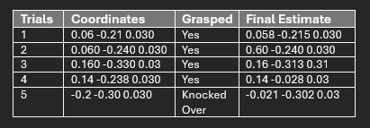
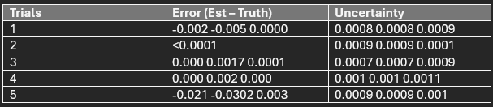
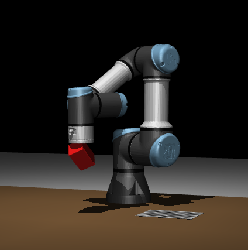
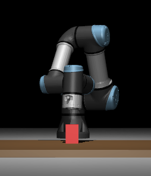
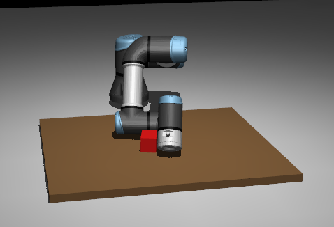
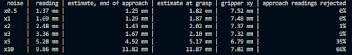

The test method involved running the MuJoCo simulation with the cube at five different positions across the table, set in scene_pick.xml. Camera noise was enabled, and the ground truth was taken from the scene definition, with z = 0.030m (half of the cubes initial height of 6cm). The ground truth was only used to score the results afterwards, never by the robot. The success of a trial was counted if the cube was lifted and centred underneath the end effector judged visually in the viewer and by the position error.
The table above indicates that the cube was properly grasped in only 4 out of the 5 trials, with trial 5 being knocked. The lowest error occurred when the cube was centred in the camera’s view, while the largest error occurred when the cube was only partly in view, as seen in trail 3. The error in trial 2 is shown as <1mm because the printed estimate is rounded to the nearest 1mm.
For estimation accuracy, trials 1, 2 and 5 had errors of 5mm or less, as they had a full view of the cube (approximately 13 000 red pixels). Trial 4 was placed on the checkerboard, showing that the black and whites squares did not affect the RGB-D red colour detection. Trial 3 had a 17mm error because the cube was at the top edge of the image and only partly visible (4 945 red pixels), so the centroid of the visible red pixels was biased towards the robot. The accuracy of the estimate directly depends on how much of the cube is visible, as a fuller view provides more red pixels for the RGB-D camera.
In terms of uncertainty consistency, trial 3 had an error of 17mm against an uncertainty of 0.7mm whilst trial 1 had 5mm against 0.8mm. For a well-tuned filter, the true error usually stays within about 2 two standard deviations. However, the Kalman filter is modelling random noises within the scene, as partial views of the cubes cause a systematic bias, which the averaging in the filter can’t remove.

Trial 5 achieved an accurate estimate of 2.2mm error however, during the descent the cartesian errors increased and jumped dramatically by around 100mm, showing how the arm swung away from the cube, before returning to the cube. The inverse kinematic functions only solves for a goal joint configuration and does not control the actual path take, Because the camera cannot see the cube within this timeframe of the descent, the pipeline still reported a successful grasp at the estimated position.
Improvements could include using resolved motion rate control (RMRC) to move the end effector in a straight line during the descent, avoiding errors like those in trial 5, where the cube was knocked over. Furthermore, comparing the RGB-D perception with a second method, such as IBVS, could also reduce bias and errors. Finally, since the camera calibration had a small bias in the fy focal length, using more calibration views with greater tilt variation would improve the camera model, although this effect is small compared to the other errors.


Above is the noise at its original value compared to if the system had 100x the noise. Clearly the noise affects the kalmans filter ability to correct it but this is an extreme scenario for visual sake. To test our systems robustness to the camera noise, we scaled the noise from 0.5x to 10x while the kalman filter remained the same to see the effects on the filters error.

Doing 10 runs for each noise value, we get the table above. This shows that the filter can generally handle up to 3x the designed noise, though past that point the error at grasp increases greatly, going from 2.1mm at 3x to 5.17mm at 5x, then 11.87mm at 10x. This is because the filter starts from its first reading and assumes it to be a much smaller error, and so it trusts it too much and skews the rest of the readings, rejecting readings outside the gate threshold even if they are closer. This results in the grasp being closer to the initial error than it being filtered out.
This could be fixed by taking an average of the first few readings and basing the NIS gate off that rather than solely the first reading.